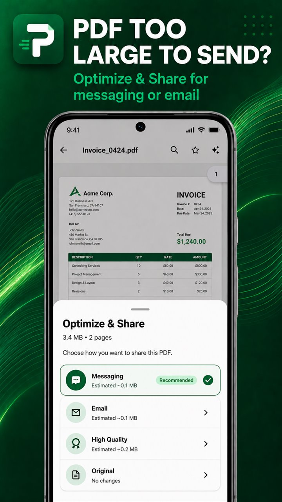

Messaging
Prepare a large PDF for a conversation where a smaller attachment is easier to send.
Pagrix guide for Android
Optimize & Share tutorial
A large PDF can be difficult to email, upload to a portal or send through a messaging app. Pagrix first analyzes the document, then helps you choose an optimized sharing option—or keep the original when compression is unlikely to help.

A practical PDF compressor
Different destinations have different limits. Optimize & Share gives you choices without promising that every file will compress well.
Prepare a large PDF for a conversation where a smaller attachment is easier to send.
Choose a middle optimization option when an email attachment needs to be lighter.
Check whether reducing the PDF file size is worthwhile before using it elsewhere.
From the Pagrix home screen, tap Open PDF. Use Select PDF Files to choose the document, which then opens in the PDF viewer. You can also open an existing PDF from Pagrix's file lists.
In the viewer toolbar, tap the sparkle icon labeled Optimize & Share. Pagrix analyzes the local PDF before showing choices.
The Optimize & Share panel shows the original file size and page count. Depending on analysis confidence, optimized options may show an estimated size, May increase file size, No meaningful size saving, or Size depends on document content.
Messaging uses the strongest optimization preset, Email uses a middle preset, and High Quality uses the lightest preset. Choose Original for no changes.
If you choose an optimized option, Pagrix prepares a temporary sharing copy. If the completed candidate is not smaller than the source PDF, Pagrix removes it and shares the original instead.
Pagrix opens Android's share interface with the selected result. Choose the messaging, email or other compatible application you want to use.
Understanding the choices
Results depend on the document's content. Scanned pages, images and already-optimized PDFs can behave differently.
The strongest optimization choice for sharing when a smaller attachment matters most.
A middle optimization choice that aims for a balance between size and document appearance.
The lightest optimization choice when retaining more visual detail is the priority.
No changes. Share the source document when optimization is not useful or preserving PDF features matters.
Understanding PDF optimization
Optimize & Share converts PDF pages to images when it produces an optimized sharing copy. Stronger optimization can reduce image detail, so inspect important text and diagrams after sharing when readability matters.
Stronger optimization can reduce image detail and affect fine text inside scanned pages.
Converting pages to images can remove searchable text, links, forms, annotations and other PDF features.
An already efficient PDF may show little saving or even become larger with an optimized preset.
When compression may not help
When the analysis indicates a digital PDF or low optimization potential, Pagrix warns that the original may be the better choice. If every optimized preset lacks a useful projected saving, the panel gives Share Original priority and keeps Optimize Anyway available.
This avoids presenting compression as automatically beneficial. Even after an optimized option is selected, Pagrix checks the generated file and falls back to the source when the candidate is not smaller.
Frequently asked
Open the PDF in Pagrix, tap Optimize & Share in the viewer toolbar, review the analysis, and choose Messaging, Email or High Quality when the projected result is useful.
The PDF may already be optimized, contain efficient digital content or respond poorly to page-image compression. Pagrix can report no meaningful saving, warn that a preset may increase file size, or share the original if the generated candidate is not smaller.
It can. Stronger optimization may reduce image detail. Because Optimize & Share converts pages to images, it can also remove searchable text, links, forms, annotations and other PDF features.
They map to progressively lighter optimization presets: Messaging is strongest, Email is the middle option, and High Quality is lightest.
Pagrix can recommend the original when analysis identifies a digital document or low optimization potential. If no optimized preset has a useful projected benefit, Share Original becomes the primary action.
Select an option in Optimize & Share. Pagrix prepares the appropriate result and opens Android's share interface so you can choose a compatible app.
No permanent copy is saved to a chosen folder in this workflow. Use Compress PDF from the Pagrix home screen when you need to save a compressed PDF to a selected destination.
Pagrix for Android
Optimize when it helps, or keep the original when it does not.